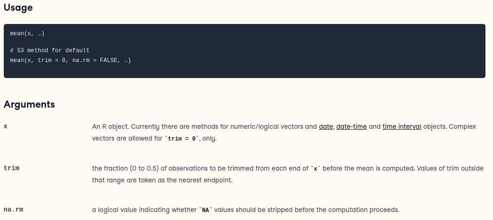

R. The R Project for Statistical Computing. Available at: https://cran.r-project.org/
Select: “Download R for (Linux/macOS/Windows)” and follow the
instructions.
R Studio Desktop. Available at: https://posit.co/download/rstudio-desktop/
Scroll down to find your installer, ex: “RSTUDIO-2024.04.2-764.EXE” for
Windows
Once you have installed both R and RStudio, you will be able to start
the RStudio application. The console, where you can begin to execute
commands, is in the bottom left containing the >
Recommended Reading: The R Book, Chapter 2 “Essentials of the R
Language”
Available here
It is important when sharing your code and for your own sanity to document your code well.
# R will skip any line of code that begins with a '#'
x = 5
# x = 4
x[1] 5x = 4
x[1] 4# The basic operations are "*, +, -, /, ^"2+3 [1] 52*3 [1] 62/3 [1] 0.66666672^3[1] 82*(3+1)^2[1] 32# You can store results in variables and use them in calculations.
x = 2+3
# When you assign a value to a variable it does not print the answer to the screen. You can see the value of x by using x as a command.
x[1] 5y = 1+2
x*y[1] 15z = x^y
z[1] 125# R has another notation for assignment: the arrow: <- . Many R programmers use this. It may seem odd to programmers coming from other languages.
x <- 3
x[1] 3x <- 5.412
x[1] 5.412Look here for an explanation of the differences between “=” and “<-”.
A vector is a type of list. Often it is a list of numbers, but it can be a list of other types such as characters. You create vectors by using the c() function (concatenate).
# A vector with 4 entries
c(1, 2, 3, 4)[1] 1 2 3 4# You can store vectors in variables.
x = c(1.1, 0.0, 3.14, 2.718)
x[1] 1.100 0.000 3.140 2.718# Of course using the arrow instead of equal sign works here.
x <- c(2,4,6)
x[1] 2 4 6# Sequences of integers are so common that there is a shortcut for making them.
1:4; 3:10; 9:2[1] 1 2 3 4[1] 3 4 5 6 7 8 9 10[1] 9 8 7 6 5 4 3 2# A long vector will be displayed over several lines. The number at the start of each line in brackets is the index of the first entry on that line.
x = 1:40
x [1] 1 2 3 4 5 6 7 8 9 10 11 12 13 14 15 16 17 18 19 20 21 22 23 24 25
[26] 26 27 28 29 30 31 32 33 34 35 36 37 38 39 40R has all the functions you know and love. (Most of them can be used on vectors.)
# We'll start with functions numbers
sin(1)[1] 0.841471sin(1.4)[1] 0.9854497sin(3)[1] 0.14112# R knows about pi
pi[1] 3.141593sin(pi/2)[1] 1# The exponential function is given by 'exp'.
exp(0); exp(1)[1] 1[1] 2.718282# factorial: n!
factorial(8)[1] 40320# n choose k
factorial(8)/(factorial(3)*factorial(8-3))[1] 56# n choose k: a built in function!
choose(8,3)[1] 56# Sum and mean functions on vectors. They take the sum and average respectively of the vectors entries
x = 1:6
x[1] 1 2 3 4 5 6sum(x)[1] 21mean(x)[1] 3.5# Example: find the sum of the integers from 1 to 1024.
x = 1:1024
sum(x)[1] 524800# This can be done in one command.
sum(1:1024)[1] 524800# Functions can have required and optional variables that must be passed through
# For example, the function 'mean' is described this way:
# If the data in the vector Y includes NA the default mean function doesn’t work properly
Y <- c(1, 2, 3, NA, 5, 6, NA, 9, 10, NA)
mean(Y)[1] NA# this is the same as the default
mean(Y, na.rm=FALSE) [1] NA# Now, changing the argument to TRUE
mean(Y, na.rm=TRUE)[1] 5.142857R and RStudio have complete documentation on all R functions. The lower right pane in RStudio has a help tab you can use. The help contains a lot of information, so you will have to learn to filter out what you don’t need. Try to use the R Documentation before taking your query to your favourite search engine.
# You can also access the help directly from the console tab. This will open the R Documentation for the 'mean()' function.
help(mean)
# or
?meanCopyright © 2024 Lauren Cipriano